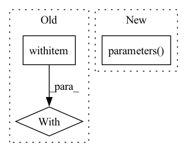

Pattern ID :13663
Before Change
num_samples += predictions.size(0)
// Set to 0 the gradient of pruned neurons
with torch.no_grad():
for name, module in model.named_modules():
if isinstance(module, nn.Conv2d):
for n, p in module.named_parameters():
if n == "weight_orig":After Change
p.grad.mul_(module.weight_mask[:, 0, 0, 0])
// what is the chance of an unpruned weight to be exactly 0?
for param in model.parameters() :
param.grad.data.mul_(torch.abs(param.data) > 0)
scaler.step(optimizer)In pattern: SUPERPATTERN
Frequency: 3
Non-data size: 3
Instances Fragment ID: 45771471
Project Name: eidoslab/simplify
Commit Name: e3cef5125238684e5bce46c85ed1ed762abd377e
Time: 2021-07-01
Author: carlo.alberto.barbano@outlook.com
File Name: training/train.py
M Class Name: AnonimousClass
N Class Name: AnonimousClass
M Method Name: main(1)
N Method Name: main(1)
M Parent Class:
N Parent Class:
M File Name: training/train.py
N File Name: training/train.py
M Start Line: 49
M End Line: 129
N Start Line: 49
N End Line: 147
Before Change
def _test_reestimation(model, data_loader, expected_mean, expected_var):
old_params = list(model.named_parameters())
with torch.no_grad():
for data in data_loader:
model(data)
mean_orig, var_orig = [After Change
def _test_reestimation(model, data_loader, expected_mean, expected_var):
old_params = copy.deepcopy(list(model.parameters() ))
mean_orig, var_orig = [
( bn.running_mean.clone().detach(), bn.running_var.clone().detach() ) Fragment ID: 45771474
Project Name: quic/aimet
Commit Name: 77c3ecc0fe8f2b3f845b1176ca22c4348473bd02
Time: 2022-11-30
Author: quic_kyunggeu@quicinc.com
File Name: TrainingExtensions/torch/test/python/test_bn_reestimation.py
M Class Name: AnonimousClass
N Class Name: AnonimousClass
M Method Name: _test_reestimation(4)
N Method Name: _test_reestimation(4)
M Parent Class:
N Parent Class:
M File Name: TrainingExtensions/torch/test/python/test_bn_reestimation.py
N File Name: TrainingExtensions/torch/test/python/test_bn_reestimation.py
M Start Line: 121
M End Line: 147
N Start Line: 155
N End Line: 180
Before Change
targets["target_seg"] = seg_mask.squeeze().to(device=self._device)
// Make prediction
with autocast():
losses, _ = self._model.train_step(data, targets, evaluation=False)
loss_abs = sum(losses.values())
self._optimizer.zero_grad()After Change
// Clip grads to counter exploding grads
max_norm = self._config["clip_max_norm"]
if max_norm > 0:
torch.nn.utils.clip_grad_norm_(self._model.parameters() , max_norm)
self._optimizer.step()
Fragment ID: 45771472
Project Name: bwittmann/transoar
Commit Name: d1d610ce7014a86c72c7d5625dbe82be40b2c340
Time: 2022-06-24
Author: bastian.wittmann@tum.de
File Name: transoar/trainer.py
M Class Name: Trainer
N Class Name: Trainer
M Method Name: _train_one_epoch(2)
N Method Name: _train_one_epoch(2)
M Parent Class:
N Parent Class:
M File Name: transoar/trainer.py
N File Name: transoar/trainer.py
M Start Line: 46
M End Line: 88
N Start Line: 42
N End Line: 83